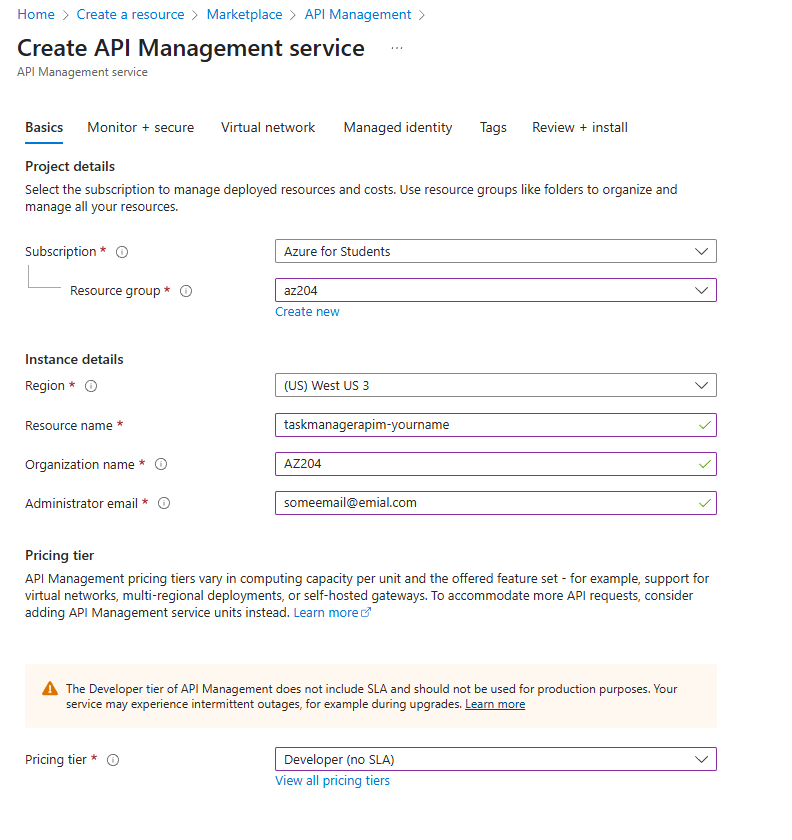

Connect to and Consume Azure Services and Third-Party Services with API Management
This guide covers the AZ-204 exam topics for connecting to and consuming Azure services and third-party services using Azure API Management (APIM). We'll integrate our existing TaskManagerWeb (WebApp) and TaskManagerFunctions (Function App) with APIM to manage and secure their APIs. The focus is on creating an APIM instance, creating and documenting APIs, configuring access, and implementing policies.
Prerequisites
- Azure Subscription (Free tier or $200 credit recommended).
- Existing Resource Group (
az204exam). - Deployed Apps:
- WebApp:
taskmanagerweb-yourname(ASP.NET Core MVC, Free F1 tier). - Function App:
taskmanagerfunc-yourname(.NET 8 isolated, Consumption plan). - Tools:
- .NET SDK 8.0:
winget install Microsoft.DotNet.SDK.8. - Azure CLI.
- Azure Functions Core Tools.
Create an Azure API Management Instance
We'll set up an APIM instance to manage APIs for our Function App's ManageTask endpoint and WebApp's task operations.
Steps
- Create an APIM instance as shown in the screenshot below.
Step 1: Create APIM Instance

Create and Document APIs
We'll import the Function App's ManageTask endpoint as an API, manually define a WebApp API, and then document both.
Steps
Import Function App API
Follow these steps to import the Function App API:
-
In the Portal, go to
taskmanagerapim-yourname> APIs > Add API > Select Function App. -
Configure the settings as follows:
- Function App:
taskmanagerfunc-yourname. - Select functions: Check
ManageTask. - Display name:
TaskManagerFunctionsAPI. - API URL suffix:
functions.
Create WebApp API Manually
Follow these steps to create the WebApp API manually:
-
In APIs, select OpenAPI > Manual definition.
-
Configure the settings as follows:
- Display name:
TaskManagerWebAPI. - API URL suffix:
web. -
Base URL:
https://taskmanagerweb-yourname.azurewebsites.net. -
Add the following operations:
- GET /api/tasks:
- Display name:
Get Tasks. - URL:
GET /api/tasks. - Description:
Retrieves the list of tasks.
- Display name:
- POST /api/tasks:
- Display name:
Create Task. - URL:
POST /api/tasks. - Description:
Creates a new task.
- Display name:
Document APIs
Follow these steps to document the APIs:
-
Document the
TaskManagerFunctionsAPIwith its description and request body example. -
Document the
TaskManagerWebAPIwith its description and request body. -
Save all changes.
Step 1: Document TaskManagerFunctionsAPI
- Go to APIs >
TaskManagerFunctionsAPI> Settings > Description. - Add:
API for managing tasks stored in Cosmos DB via Azure Functions. - For the
ManageTaskoperation: - Select POST /api/managetask > Frontend > Add description:
Creates a task with title, description, and due date. - Add request body example:
{
"Title": "Sample Task",
"Description": "Test task",
"DueDate": "2025-04-15"
}
Step 2: Document TaskManagerWebAPI
- Go to Settings > Description:
API for task management operations from the WebApp. - For
GET /api/tasks: Description:Returns all tasks. - For
POST /api/tasks: Description:Adds a new task. Request body:
{
"title": "New Task",
"description": "Details",
"dueDate": "2025-04-15"
}
Test APIs
Follow these steps to test the APIs:
-
Go to the Test tab in each API.
-
Test the
TaskManagerFunctionsAPI. -
Test the
TaskManagerWebAPI. -
Check the Developer Portal (under Overview > Developer portal) to see API docs.
Step 2: Test TaskManagerFunctionsAPI
- Select
POST /functions/managetask, add the body from the example above, and send. - Verify HTTP 200 and task data in response.
Step 3: Test TaskManagerWebAPI
- Test
POST /web/api/taskswith the body from the example above. - Note: If the WebApp lacks
/api/tasks, we'll update it later (see Next Steps).
Why
Creating APIs exposes our app functionality, and documentation ensures usability, both critical for the exam.
Configure Access to APIs
We'll secure API access using subscription keys and Microsoft Entra ID authentication.
Steps
Follow these steps to configure access to the APIs:
-
Enable subscription keys and generate a key.
-
Test the API with the subscription key.
-
Configure Entra ID authentication.
-
Test Entra ID access through the Developer Portal.
-
Verify the access controls.
Step 1: Enable Subscription Keys
- In
taskmanagerapim-yourname> Subscriptions > Ensure Require subscription is enabled for both APIs. - Generate a key:
- Select Add subscription.
- Name:
TaskManagerClient. - Scope: All APIs.
- Save and copy the Primary key.
Step 2: Test with Subscription Key
Use curl or Postman with the following command:
curl -X POST https://taskmanagerapim-yourname.azure-api.net/functions/managetask -H "Ocp-Apim-Subscription-Key: [your-key]" -H "Content-Type: application/json" -d '{"Title":"APIM Task","Description":"Test","DueDate":"2025-04-15"}'
- Verify HTTP 200 and task creation (check Cosmos DB in Portal > Data Explorer >
TasksDB/Tasks).
Step 3: Configure Entra ID Authentication
- In Microsoft Entra ID (from
auth.md), use the existingTaskManagerWebAppapp registration. - Update redirect URI:
- Add
https://taskmanagerapim-yourname.portal.azure-api.net/signin-aad(for Developer Portal). - In APIM > APIs >
TaskManagerFunctionsAPI> Settings: - Authentication: Add OAuth 2.0.
- Configure:
- Authorization server: New server.
- Name:
EntraID. - Client ID: From
TaskManagerWebAppapp registration. - Client secret: Create and copy one from Certificates & secrets.
- Authorization URL:
https://login.microsoftonline.com/[your-tenant-id]/oauth2/v2.0/authorize. - Token URL:
https://login.microsoftonline.com/[your-tenant-id]/oauth2/v2.0/token. - Default scope:
api://[your-client-id]/user_impersonation.
- Save.
- Apply to
POST /managetaskoperation.
Step 4: Test Entra ID Access
- In Developer Portal, sign in with an Entra ID account.
- Test
POST /functions/managetaskusing the portal's Try it feature. - Verify task creation in Cosmos DB.
Step 5: Verify
- Without a subscription key, requests to APIs return HTTP 401.
- Entra ID-authenticated requests succeed in the Developer Portal.
Why
Configuring access with keys and Entra ID ensures secure API consumption, a core AZ-204 topic.
Implement Policies for APIs
We'll add policies to rate-limit the Function App API and rewrite URLs for the WebApp API.
Steps
Follow these steps to implement policies for the APIs:
-
Add a rate-limit policy to the Function App API and test it.
-
Add a URL rewrite policy for the WebApp API and test it.
-
Verify the policies.
Step 1: Rate-Limit Function App API
- In
taskmanagerapim-yourname> APIs >TaskManagerFunctionsAPI> All operations. - Select Design > + Add policy.
- Add Inbound processing policy:
<rate-limit calls="5" renewal-period="60" />
- Save.
- Test with the following command:
for i in {1..6}; do curl -X POST https://taskmanagerapim-yourname.azure-api.net/functions/managetask -H "Ocp-Apim-Subscription-Key: [your-key]" -H "Content-Type: application/json" -d '{"Title":"Test'$i'","Description":"Rate limit","DueDate":"2025-04-15"}'; done
- Expect HTTP 429 (Too Many Requests) after 5 calls in 60 seconds.
Step 2: Rewrite URL for WebApp API
- In
TaskManagerWebAPI> All operations. - Add policy:
<rewrite-uri template="/api/tasks" />
- Save.
- Note: This assumes the WebApp will support
/api/tasks. If not implemented, we'll add it (see Next Steps). - Test with the following command:
curl -X POST https://taskmanagerapim-yourname.azure-api.net/web/api/tasks -H "Ocp-Apim-Subscription-Key: [your-key]" -H "Content-Type: application/json" -d '{"title":"Web Task","description":"Test","dueDate":"2025-04-15"}'
- Verify the request routes correctly (may fail if
/api/tasksisn't coded yet).
Step 3: Verify
- Check Trace in APIM's Test tab to confirm policies applied (rate-limit errors, URL rewrites).
- For the Function App, confirm only 5 tasks were created in Cosmos DB after the test.
Why
Policies like rate-limiting and URL rewriting demonstrate control over API behavior, a key exam skill.
Verify All Topics
- APIM Instance: Created
taskmanagerapim-yournamein Consumption tier. - Create/Document APIs: Imported
ManageTaskand definedTaskManagerWebAPIwith descriptions and examples. - Configure Access: Secured with subscription keys and Entra ID.
- Policies: Added rate-limiting and URL rewriting.
Clean Up (Optional)
To avoid costs, delete all resources:
az group delete -n az204exam --no-wait --yes
Next Steps
- Update
TaskManagerWebto support/api/tasksfor full WebApp API functionality: - Add a new controller (
Controllers/TasksController.cs):
using Microsoft.AspNetCore.Mvc;
using TaskManagerWeb.Models;
using System.Collections.Generic;
namespace TaskManagerWeb.Controllers
{
[Route("api/tasks")]
[ApiController]
public class TasksController : ControllerBase
{
private static List<TaskItem> _tasks = new List<TaskItem>();
[HttpGet]
public IActionResult GetTasks()
{
return Ok(_tasks);
}
[HttpPost]
public IActionResult CreateTask([FromBody] TaskItem task)
{
if (string.IsNullOrEmpty(task.Title))
{
return BadRequest("Title is required.");
}
task.id = System.Guid.NewGuid().ToString();
_tasks.Add(task);
return Ok(task);
}
}
}
- Deploy:
az webapp up --name taskmanagerweb-yourname --resource-group az204exam
- Test all APIs again via APIM.
- Explore third-party service integration (e.g., Microsoft Graph) for remaining exam coverage.